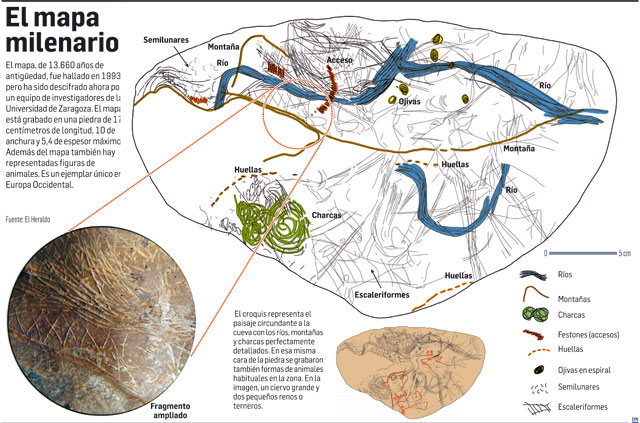
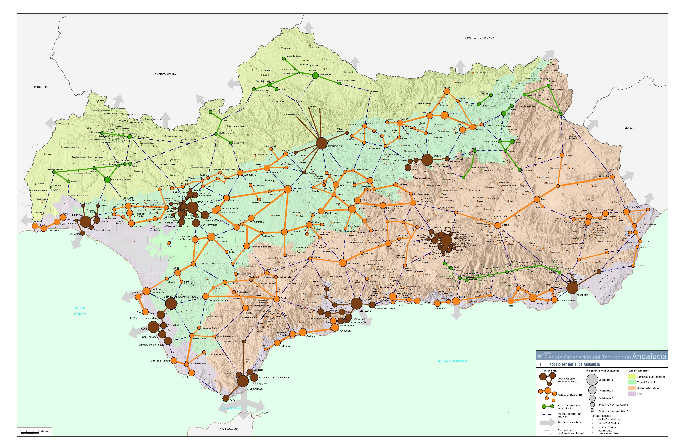
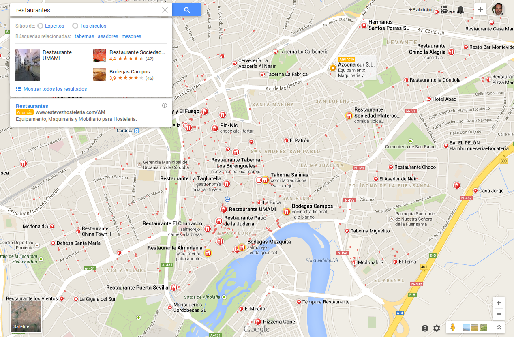
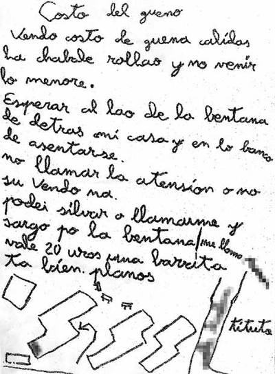
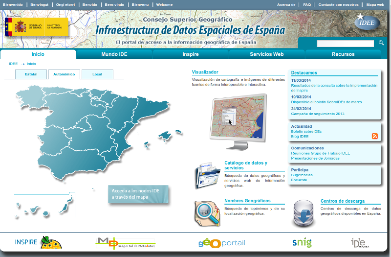
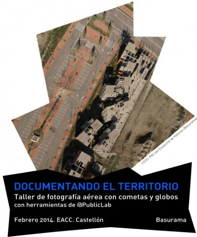

Patricio Soriano Castro :: @sigdeletras
Lic. Geografía e Historia
Consultor y Formador TIG y Patrimonio
¿Qué hace un tipo como yo en un lugar como este?
Un poco de Historia
Mapa paleolítico de la cueva de Abauntz (Navarra) 13.660 añosUn poco de Historia

Mapa paleolítico de la cueva de Abauntz (Navarra). 13.660 años. (Diario de Navarra)
Plan de Ordenación Territorial de Andalucía (Junta de Andalucía)Empresas y profesionales.

Córdoba en GoogleMaps (Google)A personas como ti y a mí.
...y a él también


Portal Infraestructura de Datos espaciales de España www.ide.esPrivada:Empresas de topografía, cartografía vuelos, GPS, UAV... Servicios Web (ej. GoogleMaps).
Importate!! Leer licencias.Información Geográfica Voluntaria...participativa, colaborativa, abierta.(Ver neogeografía).
OpenstreetMap, Wikimapia

Taller de fotográfia aérea con gobos y cometas. Basurama. Castellón